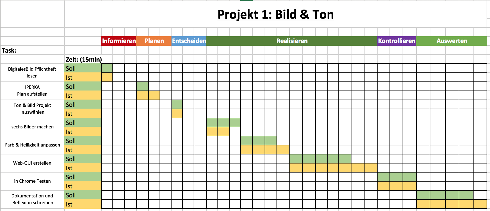

Projekt 1: Bild und Ton
Begründung der Auswahl:
Ich habe bei durchlesen des ersten Pflichtauftrags gleich an meine Schwester denken müssen, da Sie in der Freizeit als Hobby professionell Fotos schiesst. Erst gerade vor kurzem hat sie mir erzählt, dass sie gerne eine Webseite hätte wo sie diese Bilder innerhalb der Familie „sharen“ könnte. Daher kam mir die Gelegenheit eine kleine Bildergalerie zu programmieren wie gelegen.
Bezug zur Theorie:
Da wir zurzeit im Bereich Interaktion, sowohl als auch der Integration von Multimedia-Elemente zu tuen hatten, ist dieses Projekt sehr geeignet.
Wir haben in der Theorie bereits die Aufbereitung und Optimierung von Bildern durchgenommen und nun konnte ich mich in diesem Bereich anhand von einem Praxisbeispiel üben. Ich habe bei den Bildern vor allem auf die Farben und Lichtverhältnisse geschaut um ein optimales Ergebnis zu erzielen. Beim Format habe ich mich auf PNG verlassen um die Qualität möglichst zu erhalten. Zum Schluss habe ich die Bilder noch einheitlich geschnitten und skaliert.
Reflexion:
Was habe ich gelernt?
Ich habe gelernt mit Pixlr ordnungsgemäss umzugehen und den Kontrast und die Lichtverhältnisse bei einem Bild zu optimieren. Dabei ist mir schon beim ersten mal der „reviewen“ der Bilder aufgefallen, dass diese in etwa in der gleichen Distanz aufgenommen werden müssen, da dies sonst in einer Galerie sehr komisch daher kommt.
Welche Folgerungen für das Fach kann ich ziehen?
Es ist äusserst Wichtig die Basics von Lichtverhältnissen zu kennen, da man sonst schnell einmal vergisst wo und wann man ein Foto schiessen sollte.
Wie bin ich vorgegangen?
Zu erst habe ich das Pflichtenheft gelesen und anschliessend einen Zeitplan aufgestellt. Dabei habe ich mich dann auch gleich für ein erstes Projekt entschieden.
Folgend ging es dann an die Realisierung des Projekts, dabei habe ich zuerst die benötigen Ressourcen beschafft und diese bearbeitet.
Anschliessend habe ich die Web-Applikation gebaut und dann im Chrome getestet. Zum Schluss habe ich dann die Dokumentation und Reflexion geschrieben.
Welche Methoden habe ich gewählt?
Ich bin nach der 6-Schritte Methode, IPERKA, vorgegangen.
Dabei handelt es sich um sechs Phasen:

Was hat mir gefallen, was nicht?
Mir hat sehr gefallen das die Umsetzung mit dem Boostrap Framework so simpel war. Alle Tags sind bereits vorhanden und müssen dann nur noch mit den richtigen Parametern abgefüllt werden.
Was half mir beim lernen, was nicht?
Beim lernen haben mir vor allem die unzähligen Beispiele online geholfen.
Was gelang mir gut?
Ich bin mit dem Ergebnis eigentlich sehr zufrieden, es hat alle Ziele des Pflichtauftrags erfüllt und sieht einigermassen gut aus.
Was kann ich jetzt gut oder besser?
Ich kann jetzt gut mit Pixlr umgehen und kenne das Bootstrap Framework ein wenig besser.
Wo hatte ich Schwierigkeiten?
Ich hatte einige Startschwierigkeiten mit Pixlr, später habe ich mich dann aber sehr gut mit diesem Tool zurechtgefunden.
Woran will ich das nächste Mal denken?
Ich möchte von Anfang an den richtigen Tiefenabstand bei aufnehmen der Bilder einhalten.